Junta de Vecinos San Luis III · Maipú
El barrio cambia cuando nos movemos juntos.
Versión 1.0 · Julio 2026 · Todo lo que hay en esta carpeta es editable: cambia un color o una tipografía y se actualiza sitio, redes y manual juntos.
Somos la Junta de Vecinos de San Luis III, en Maipú. Abrimos la multicancha, organizamos los deportes del barrio y hacemos que las familias se conozcan. No somos una institución: somos los vecinos de acá.
El concepto del logotipo. Tres figuras con los brazos en alto son tres vecinos: el III del San Luis III. Las tres pelotas en el círculo central son los tres deportes del barrio: fútbol, vóley y básquetbol. Nadie tiene que saberlo para entenderlo, pero es lo que hace que el logo sea nuestro y no un dibujo más.
Para mantener la misma línea en todo lo que publicamos, acordamos lo contrario:
Escribimos como lo haría una vecina que avisa en el grupo del barrio:
directo, cálida, sin dar vueltas. El detalle largo está en
docs/estrategia.md.
This Thursday at five we play football at the multicancha. The teams are made up on the day, so just show up.
¡Nos emociona compartir esta inigualable y única experiencia deportiva que nos une, sin duda la mejor de toda la región, para todos ustedes!
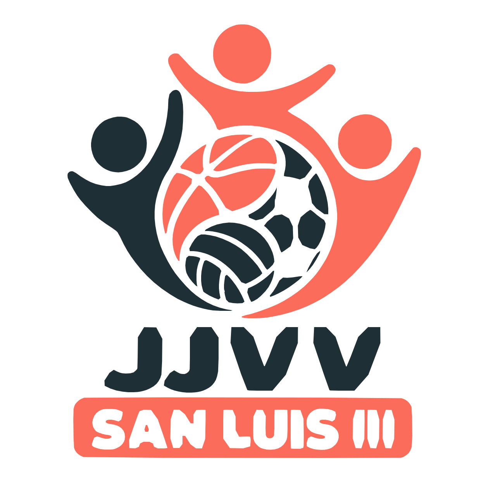
Completo · fondo claro
Reverso · fondo oscuro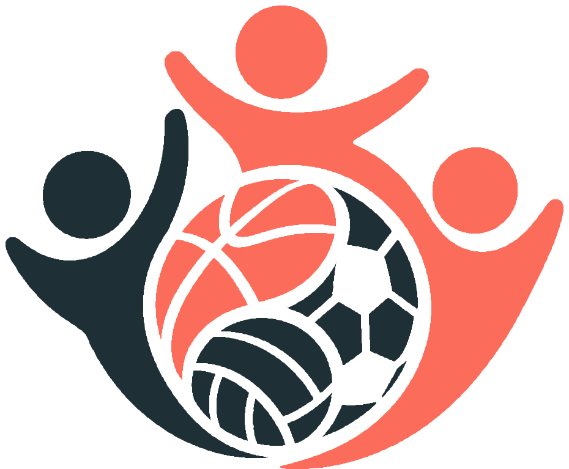
Símbolo · avatar y sello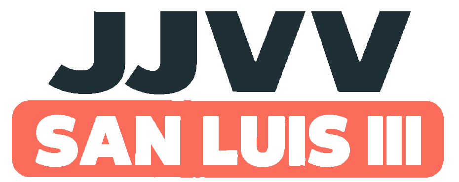
Nombre · pie de páginaEl nombre nunca se escribe con una tipografía cualquiera.
Las letras de la marca tienen su propia forma: la J cae con curva hacia
la izquierda y las V terminan en punta. Si escribes «JJVV» con la fuente
del texto, no es el logo: es un texto que se parece. Usa siempre el bloque
sanluis3-nombre.svg.
La versión reversa no es opcional. El pie del sitio y varios fondos son color tinta. Con el logo de color sobre fondo oscuro, la parte tinta se pierde. Por eso existe la versión blanca.
Y hay que cambiar la versión según el fondo. Con la versión a color: sobre crema o blanco se ve bien, pero sobre tinta desaparece la figura izquierda, y sobre salmón se pierden las figuras y el balón de básquetbol. Nunca uses la misma versión sobre fondos distintos.
| El fondo es… | Usa esta versión | Por qué |
|---|---|---|
| Crema o blanco | La de color | Los tres colores contrastan |
| Tinta (oscuro) | La reversa (en blanco) | La figura tinta se perdería |
| Salmón | La versión en tinta | El salmón del logo se fundiría |
| 16 a 64 px (favicon) | La reducción aparte | A ese tamaño todo se ve como manchas |
El favicon no es un recorte del logo: es una reducción dibujada aparte. Conserva el medallón claro y las tres pelotas, y saca las costuras, los brazos y el texto. Se probaron tres recortes reales del emblema y ninguno servía: a 16 píxeles las pelotas y las costuras se convierten en manchas grises.
El medallón con las tres pelotas es autónomo: lleva su propio disco blanco, así que se ve igual sobre cualquier fondo, y eso es lo que hace que el logo se lea siempre como el mismo, no como tres logos distintos.
Por eso, al cambiar de fondo solo se repintan las figuras de afuera. Si se repintara también el interior, el balón de fútbol y el de vóleibol —que son del mismo azul tinta que la figura— se fundirían con el disco blanco y el medallón perdería su dibujo.
Los dos colores base se tomaron muestreando el archivo original del logo, no estimados a ojo. Antes el sitio usaba un salmón más apagado y el logo se veía siempre un poco desentonado con la web. Ahora manda el logo.
#FC6C5A#CF594A#1E3036#52616B#FFD166#FFF9F6Un solo acento: el salmón. El amarillo existe para los fondos oscuros, donde el salmón se apaga. Nunca se usan los dos como colores de acción en la misma pieza.
Dos familias, dos trabajos. Se descartaron a propósito las tipografías genéricas que usa por defecto todo lo generado automáticamente: una marca que quiere que la reconozcan necesita una voz propia.
| Uso | Tamaño | Peso | Letras |
|---|---|---|---|
| Portada del sitio | 2.7rem y más | 900 | -0.04em |
| Título de sección | 2rem | 800 | -0.025em |
| Título de tarjeta | 1.2rem | 800 | -0.02em |
| Texto de lectura | 1rem | 400 | normal |
| Texto secundario | 0.95rem | 400 | normal |
| Etiquetas | 0.78rem | 800 | +0.06em, mayúsculas |
Outfit es más abierta que la media, así que los titulares grandes llevan tracking negativo y las etiquetas positivo. Copiar esos valores desde los tokens, no improvisar.
Todo el sistema usa la misma escala. Mezclar botones cuadrados con tarjetas redondeadas es una de las cosas que más hace que un diseño se vea genérico.
| Radio | Se usa en |
|---|---|
| Píldora (completo) | Botones, etiquetas y chips |
| 24 px | Tarjetas, paneles y fotos |
| 16 px | Bloques medianos y campos |
| 8 px | Detalles pequeños y miniaturas |
Las sombras están teñidas de tinta, nunca de negro puro. Un negro al 30 % sobre fondo crema se ve sucio; con tinta al 12 % se ve profundidad.
sombra suave 0 2px 8px rgba(30, 48, 54, .07)
sombra media 0 10px 24px rgba(30, 48, 54, .11)
sombra tarjeta 0 18px 50px rgba(30, 48, 54, .13)
sombra marca 0 14px 34px rgba(252, 108, 90, .28)Prohibido en todo el sistema: degradados violetas o azules
fluorescentes, brillos de neón, emojis como íconos, negro puro
#000000 y blanco puro #FFFFFF sobre superficie
clara. Son las marcas que hacen que una publicación parezca hecha
automáticamente.
Hay ocho plantillas, cada una en el tamaño exacto que pide su plataforma. No hay que redimensionar nada: se edita el texto y se exporta.
| Pieza | Tamaño | Fondo | Cuándo se usa |
|---|---|---|---|
| Post de Instagram | 1080 × 1080 | Crema | Evento o convocatoria |
| Historia de Instagram | 1080 × 1920 | Tinta | Recordatorio el mismo día |
| Carrusel | 1080 × 1350 | Salmón | Portada de información |
| Portada de TikTok | 1080 × 1920 | Tinta | Video del barrio |
| Publicación de Facebook | 1200 × 630 | Blanco | Mismo post, formato Facebook |
| Portada de Facebook | 820 × 312 | Tinta | Imagen de portada del perfil |
| Banner web | 1920 × 600 | Crema y tinta | Sitio y boletín |
| Aviso WhatsApp | 1080 × 1080 | Salmón | Difusión en grupos del barrio |
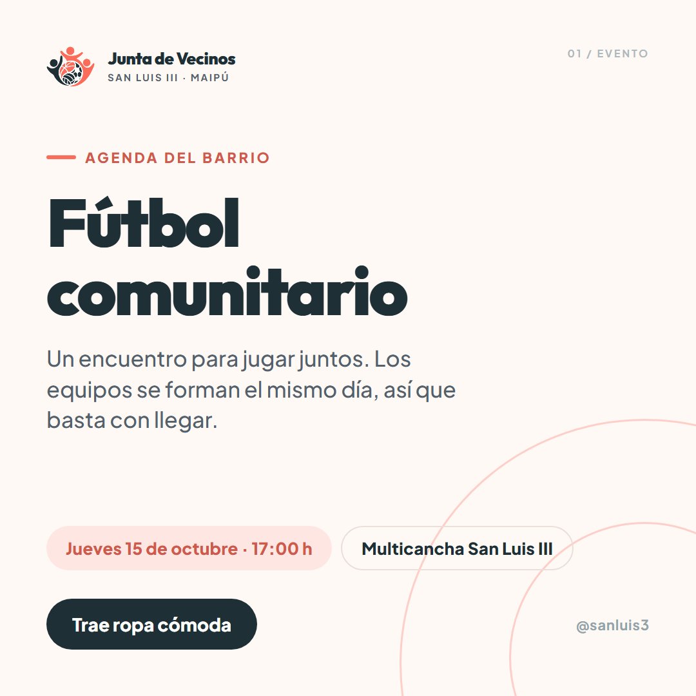
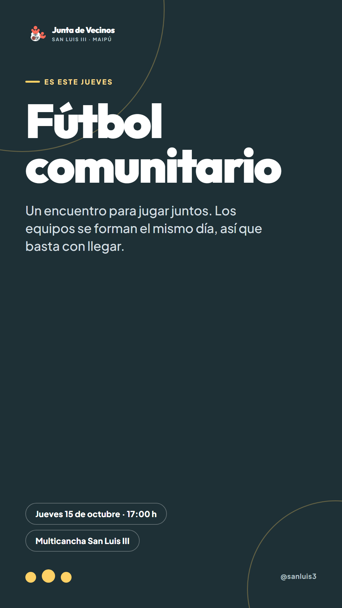
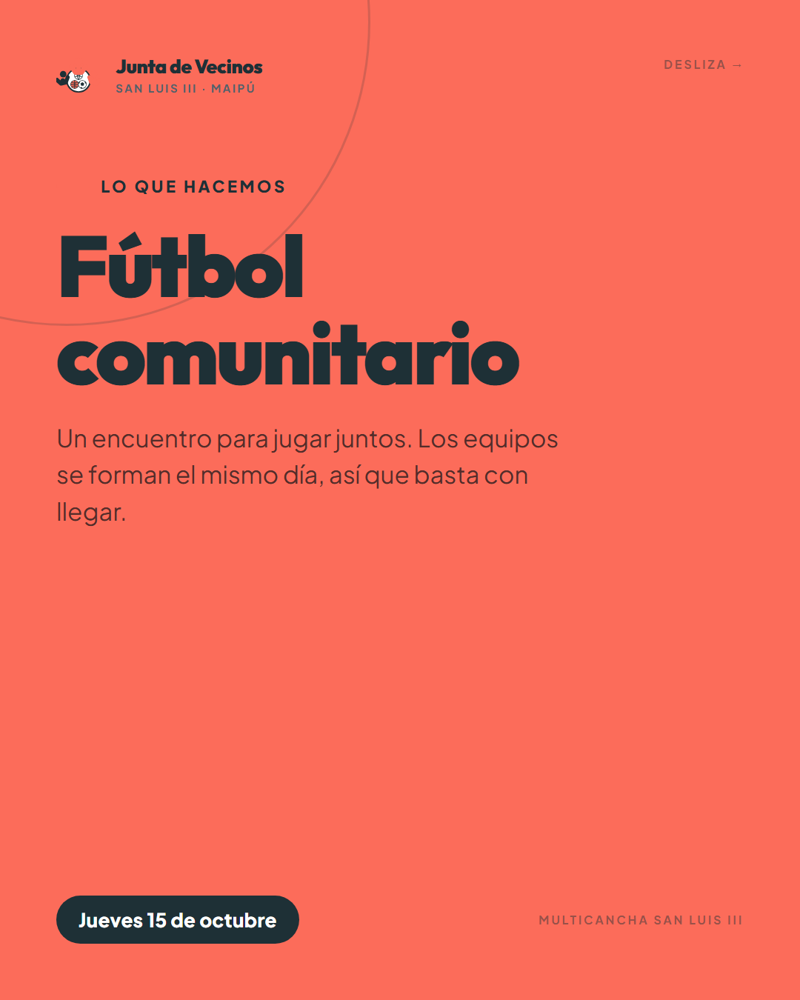
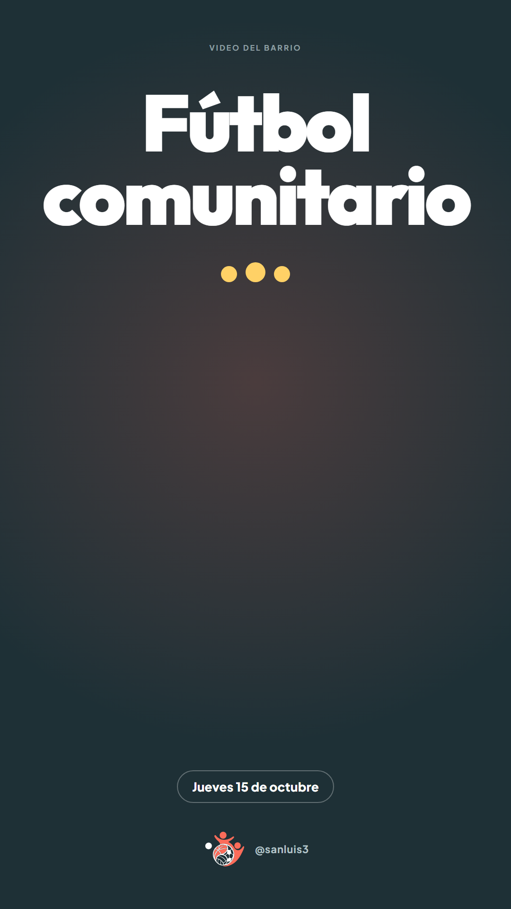
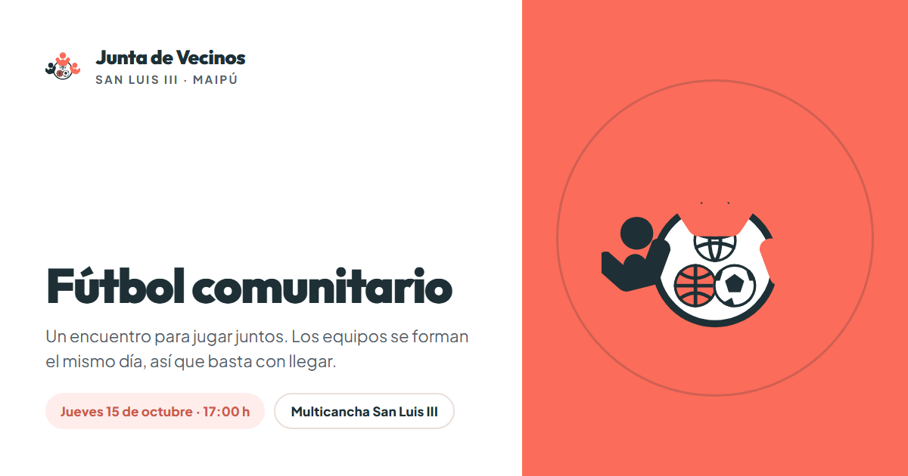
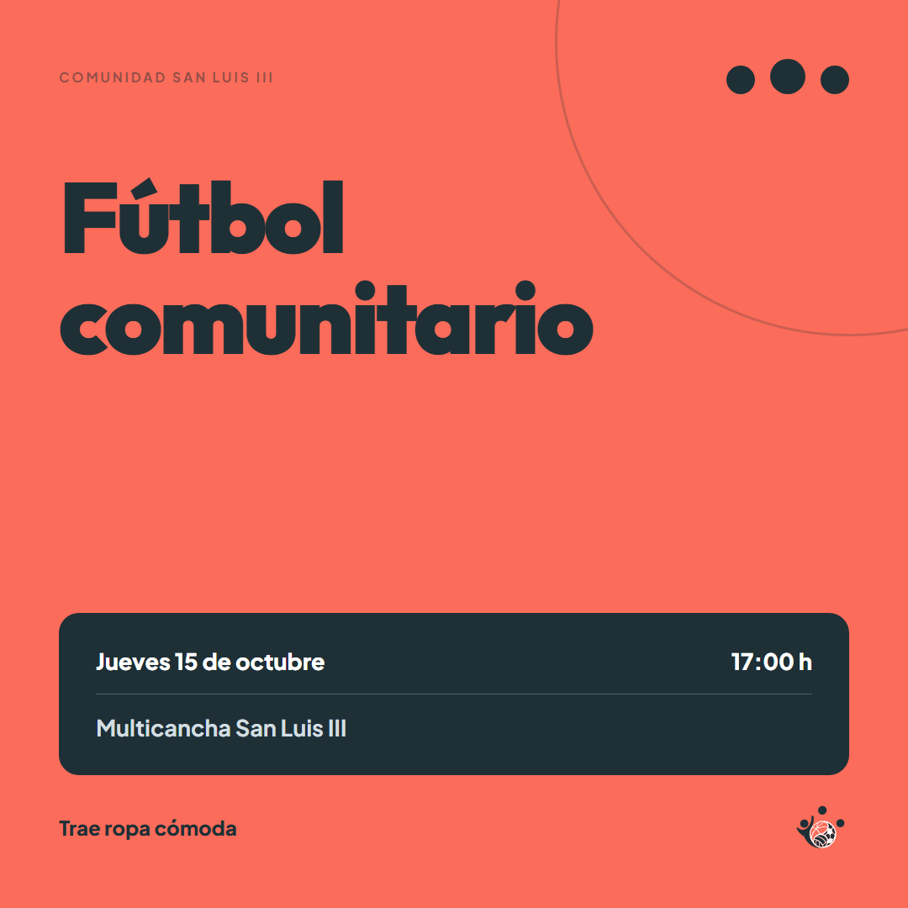
La retícula completa de la marca está en board/board-identidad.html.
| Carpeta | Qué hay |
|---|---|
| logo/ | El logo en SVG (vectorial, se imprime nítido) y sus versiones |
| tokens/ | Los colores y las medidas de todo el sistema |
| tipo/ | Las dos tipografías y sus archivos de texto |
| plantillas/ | Las 8 piezas, cada una con su HTML y su PNG |
| board/ | La retícula 3 × 3 de la identidad |
| docs/ | Estrategia de voz, con ejemplos de textos |
| tools/ | Los scripts que regeneran todo |
# Cambia el texto de una publicación
node marca/tools/plantillas.mjs
# Cambia un color en tokens/tokens.css y rehace las 8 piezas
node marca/tools/plantillas.mjs
node marca/tools/render.mjs solo=plantillas
# Cambia el logo y rehace sus versiones
node marca/tools/variantes.mjs
# Verifica que los SVG estén sanos antes de subirlos
node marca/tools/limpiar-svg.mjsTodo esto se regenera solo. Si cambia el color del logo, se cambian los tokens y en un comando quedan al día el sitio, las ocho plantillas, el board y este manual. No hay que editar las imágenes a mano.